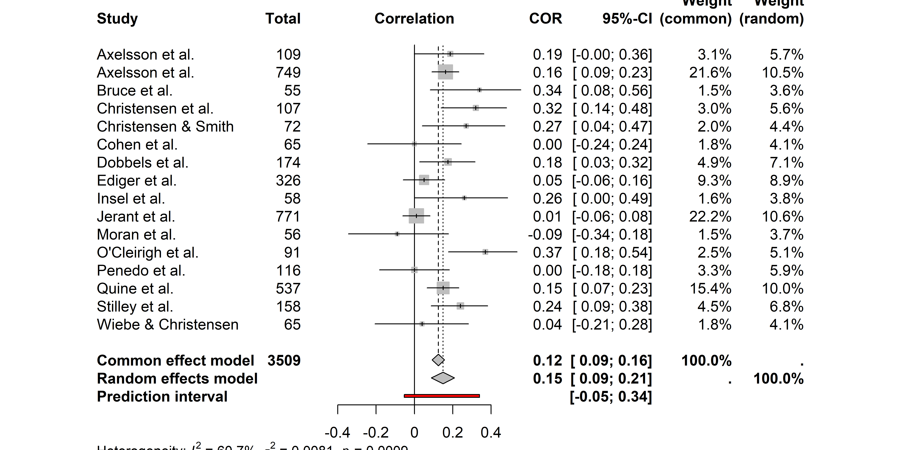
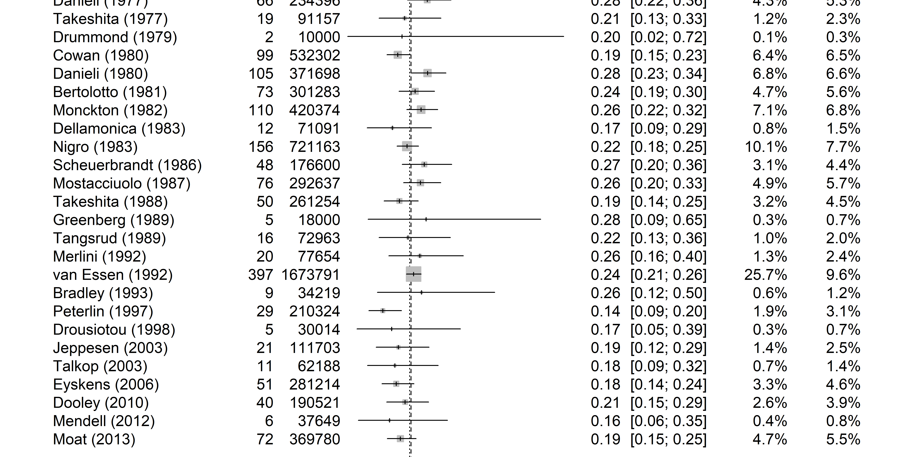
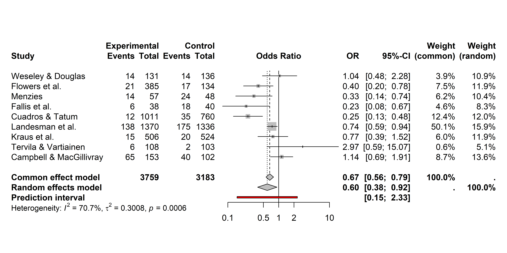
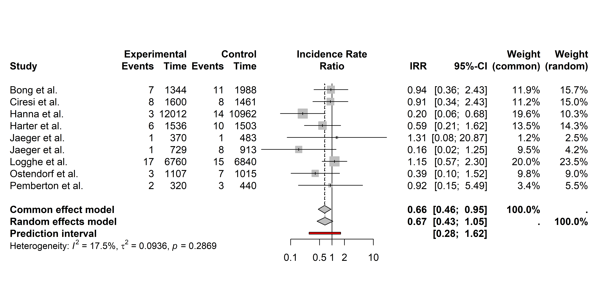

Meta-análisis en R
Clase 1
¿Qué es un meta-análisis?
Una herramienta estadística para sintetizar cuantitativamente los resultados de estudios independientes incluidos en una revisión sistemática.
La unidad de análisis son los estudios científicos.
Su objetivo es obtener un estimador numérico que resuma los resultados individuales.
Aplicable a investigaciones cuantitativas, con diseños de estudio similares y que evalúen la misma medida de asociación.
✔️ Ventajas
Sintetiza cuantitativamente la evidencia disponible.
Aumenta la potencia estadística.
Mejora la precisión de los estimadores.
Identifica patrones no evidentes en estudios individuales.
Evalúa la consistencia de los resultados en diferentes contextos.
❌ Desventajas
Su validez depende de la calidad metodológica de los estudios.
Afectado por sesgo de publicación.
La heterogeneidad entre estudios puede dificultar la interpretación.
Requiere criterios de inclusión y exclusión rigurosos.
No corrige errores metodológicos de los estudios primarios.
Estimadores de efecto
Los estudios incluidos en la revisión sistemática pueden diferir en diseño, población objetivo y/o medición de variables.
Esta variabilidad impide el uso de métodos estadísticos convencionales.
Los modelos de meta-análisis se basan en estimadores de efecto (effect sizes) que indican la magnitud y dirección de la relación entre dos variables.
Los estimadores de efecto deben ser:
- Comparables
- Computables
- Confiables
- Interpretables
Podemos calcular estimadores de efecto para: proporción, correlación, diferencia de medias, odds-ratio (OR), riesgo relativo (RR) y tasa de incidencia (IRR).
Modelo de efectos fijos
Asume que los estimadores individuales corresponden a un mismo efecto verdadero y toda la variación se da a causa del error muestral.
El estimador global (\(\theta\)) se calcula como el promedio ponderado de los efectos individuales (\(y_i\)):
\[ \theta = \frac{\sum{y_i w_i}}{\sum{w_i}}\qquad donde~w_i = 1/var_i \]
Los estudios con menor varianza tienen mayor peso en la estimación global.
Modelo de efectos aleatorios
En la práctica, existen fuentes de variabilidad adicionales al error aleatorio, por lo que los modelos de efectos fijos no suelen ser apropiados.
Esta variabilidad se conoce como heterogeneidad estadística o tau-cuadrado (\(\tau^2\)).
Los modelos de efectos aleatorios tienen en cuenta la heterogeneidad y suponen que existe una distribución de efectos verdaderos.
üí° El objetivo será estimar la media de la distribuci√≥n de efectos verdaderos.
La ponderación de los estudios entonces tiene en cuenta la varianza dentro del estudio (\(var_i\)) y la heterogeneidad entre estudios (\(\tau^2\)):
\[w^*_i = \frac{1}{var_i + \tau^2}\]
Los métodos más comunes para estimar \(\tau^2\) son:
- Máxima verosimilitud restringida (REML)
- DerSimonian y Laird
Medidas de heterogeneidad
tau-cuadrado (\(\tau^2\))
Estima la varianza entre efectos verdaderos.
Se utiliza para ponderar estudios en modelos de efectos aleatorios
Q de Cochran:
Contrasta la hipótesis de efecto común.
Sensible al número de estudios.
No mide magnitud de la heterogeneidad.
\(H^2\): Razón entre la varianza total observada y la varianza esperada bajo el supuesto de homogeneidad.
I-cuadrado (\(I^2\))
Cuantifica el porcentaje de variabilidad atribuible a la heterogeneidad real.
Independiente del número de estudios.
Interpretación:
25%: baja
50%: moderada
75%: alta
Intervalo de predicción: Rango de valores que podrán tomar los estimadores de estudios futuros.
Meta-análisis en R
R (2025) es un lenguaje de programación estadístico interpretado, orientado a objetos, multiplataforma y de código abierto.
RStudio es una interfaz multiplataforma y de código abierto que facilita el uso de R. Incluye editor de scripts, consola, entorno, explorador de archivos, panel de resultados y ayuda, entre otros.
meta(Balduzzi, Rücker, and Schwarzer 2019) es un paquete de R que permite ajustar modelos de meta-análisis de manera sencilla y directa.
Paquete meta
Ajusta por defecto modelos de efectos fijos y aleatorios e indicadores de heterogeneidad.
Incluye la dependencia
metadat(Viechtbauer et al. 2025), con las bases de datos de ejemplo que usaremos durante las prácticas.Instalación (una sola vez por computadora):
Carga del paquete (cada vez que abro sesión de R):
Función metagen()
Función básica del paquete
meta.Ajusta modelos para estimadores de efecto pre-calculados.
Requiere transformación logarítmica para proporciones, OR y riesgos relativos.
En caso de datos ausentes, permite inferir estimadores de efecto y/o sus errores estándar a partir de intervalos de confianza (\(95\%~IC\)), medianas, \(p\)-valores, rangos y/o rangos intercuartílicos (\(IQR\)).
Argumentos principales
- 1
- Estimador de efecto.
- 2
- Error estándar del estimador.
- 3
- Identificador único del estudio (opcional).
- 4
- Tabla de datos (opcional).
- 5
-
Estimador de efecto global (
"OR","RR", etc.). - 6
-
Ajustar modelo de efectos fijos (
TRUE/FALSE). - 7
-
Ajustar modelo de efectos aleatorios (
TRUE/FALSE).
Ejemplo
Cargamos el paquete
meta:Cargamos el dataset “
dat.konstantopoulos2011” sobre impacto de modificación del calendario escolar en el rendimiento académico:Nuestras variables de interés son
yi(estimador de efecto) yvi(varianza del estimador).
- Ajustamos el modelo de meta-análisis:
- Los argumentos resaltados son los que necesitamos definir para correr el modelo, el resto son opcionales ya que tienen opciones por defecto.
- Podemos acceder a la salida del modelo llamando el objeto
modo usandosummary(mod):
Number of studies: k = 56
SMD 95%-CI z p-value
Common effect model -0.0133 [-0.0140; -0.0126] -38.82 0
Random effects model 0.1219 [ 0.0365; 0.2074] 2.80 0.0052
Quantifying heterogeneity (with 95%-CIs):
tau^2 = 0.1048 [0.0739; 0.1588]; tau = 0.3238 [0.2719; 0.3985]
I^2 = 99.9%; H = 41.32
Test of heterogeneity:
Q d.f. p-value
93892.81 55 0
Details of meta-analysis methods:
- Inverse variance method
- Restricted maximum-likelihood estimator for tau^2
- Q-Profile method for confidence interval of tau^2 and tau
- Calculation of I^2 based on QComponentes de la salida
k: número de estudios incluidos en el modelo.Common effect model: coeficientes, \(95\%~IC\) y \(p\)-valor del modelo de efectos fijos.Random effects model: coeficientes, \(95\%~IC\) y \(p\)-valor del modelo de efectos aleatorios.Quantifying heterogeneity (with 95%-CIs): medidas de heterogeneidad (para decidir si uso fijo o random).Details of meta-analysis methods: Resumen de los métodos estadísticos aplicados.
Forest plots
Los resultados de un meta-análisis se representan gráficamente usando forest plots.
Cada fila representa un estudio con su estimador de efecto y \(95\%~IC\) (cuadrados).
El estimador global se representa con un rombo.
Puede incluirse la tabla de datos con los resultados para cada estudio y su ponderación.
Se generan con la función
forest().
forest(mod,
common = FALSE, # Omitir modelo de efectos fijos
leftcols = "studlab", # Columnas panel izquierdo
col.diamond = "magenta", # Color del estimador global
col.square = "yellow", # Color estimadores individuales
smlab = "Diferencia de medias", # Etiqueta del estimador
hetstat = TRUE, # Mostrar indicadores heterogeneidad
calcwidth.hetstat = TRUE # Añadir espacio entre paneles
)Funciones metaxxx()
Permiten ajustar modelos de meta-análisis a partir de datos crudos sin necesidad de transformaciones previas.
Se nombran siguiendo la estructura
metaxxx, dondexxxes el tipo de datos o indicador.Ajustan modelos de efectos fijos y aleatorios y estiman indicadores de heterogeneidad.
Devuelven los resultados en la escala original de los datos, aplicando la transformación inversa (argumento
backtransf = TRUE).
Para estudios descriptivos
metacor(): coeficientes de correlación.metaprop(): proporciones simples (p. ej., prevalencias).metarate(): tasas de incidencia.
Para estudios analíticos
metacont(): datos continuos (p. ej., diferencia de medias).metabin(): datos binarios (OR, RR, diferencia de riesgos)metainc(): razón de tasas de incidencia
Para tiempo hasta el evento se utiliza
metagen()con log-hazard ratios.
Práctica 1: Correlación entre concienciación y adherencia a la medicación
[1] "authors" "year" "ni" "ri" "controls" "design"
[7] "a_measure" "c_measure" "meanage" "quality" Number of studies: k = 16
Number of observations: o = 3509
COR 95%-CI z p-value
Common effect model 0.1245 [0.0916; 0.1572] 7.36 < 0.0001
Random effects model 0.1488 [0.0878; 0.2087] 4.75 < 0.0001
Quantifying heterogeneity (with 95%-CIs):
tau^2 = 0.0081 [0.0017; 0.0378]; tau = 0.0901 [0.0412; 0.1944]
I^2 = 60.7% [32.1%; 77.2%]; H = 1.59 [1.21; 2.10]
Test of heterogeneity:
Q d.f. p-value
38.16 15 0.0009
Details of meta-analysis methods:
- Inverse variance method
- Restricted maximum-likelihood estimator for tau^2
- Q-Profile method for confidence interval of tau^2 and tau
- Calculation of I^2 based on Q
- Fisher's z transformation of correlationsForest plot
Práctica 2: Prevalencia de la distrofia muscular de Duchenne en recién nacidos
[1] "study" "pubyear" "country" "from" "to" "cases" "total" Number of studies: k = 26
Number of observations: o = 6831388
Number of events: e = 1545
events 95%-CI
Common effect model 0.2290 [0.2179; 0.2407]
Random effects model 0.2246 [0.2082; 0.2422]
Quantifying heterogeneity (with 95%-CIs):
tau^2 = 0.0130 [0.0000; 0.0376]; tau = 0.1139 [0.0000; 0.1938]
I^2 = 33.2% [0.0%; 58.6%]; H = 1.22 [1.00; 1.55]
Test of heterogeneity:
Q d.f. p-value
37.41 25 0.0527
Details of meta-analysis methods:
- Inverse variance method
- Restricted maximum-likelihood estimator for tau^2
- Q-Profile method for confidence interval of tau^2 and tau
- Calculation of I^2 based on Q
- Logit transformation
- Events per 1000 observationsForest plot
Práctica 3: efecto de los diuréticos en la prevención de preeclampsia
[1] "id" "author" "year" "pre.nti" "pre.nci" "pre.xti" "pre.xci"
[8] "oedema" "fup.nti" "fup.nci" "ped.xti" "ped.xci" "stb.xti" "stb.xci"
[15] "ned.xti" "ned.xci"# Ajustar modelo
mod_or <- metabin(
event.e = pre.xti, # Expuestos con el evento
n.e = pre.nti, # Tamaño muestral expuestos
event.c = pre.xci, # No expuestos con el evento
n.c = pre.nci, # Tamaño muestral no expuestos
sm = "OR", # Estimador de efecto
studlab = author, # Identificador del estudio
data = datos_or # Tabla de datos
)Number of studies: k = 9
Number of observations: o = 6942 (o.e = 3759, o.c = 3183)
Number of events: e = 636
OR 95%-CI z p-value
Common effect model 0.6677 [0.5620; 0.7932] -4.60 < 0.0001
Random effects model 0.5956 [0.3843; 0.9233] -2.32 0.0205
Quantifying heterogeneity (with 95%-CIs):
tau^2 = 0.3008 [0.0723; 2.2027]; tau = 0.5484 [0.2689; 1.4842]
I^2 = 70.7% [41.8%; 85.2%]; H = 1.85 [1.31; 2.60]
Test of heterogeneity:
Q d.f. p-value
27.26 8 0.0006
Details of meta-analysis methods:
- Mantel-Haenszel method (common effect model)
- Inverse variance method (random effects model)
- Restricted maximum-likelihood estimator for tau^2
- Q-Profile method for confidence interval of tau^2 and tau
- Calculation of I^2 based on QForest plot
Práctica 4: Incidencia de infecciones sanguíneas asociadas al uso de catéteres
[1] "study" "authors" "year" "x1i" "t1i" "x2i" "t2i" # Ajustar modelo
mod_inc <- metainc(
event.e = x1i, # Casos en grupo expuesto
time.e = t1i, # Tiempo-persona en grupo expuesto
event.c = x2i, # Casos en grupo control
time.c = t2i, # Tiempo-persona en grupo control
sm = "IRR", # Estimador de efecto
studlab = authors, # Identificador del estudio
data = datos_inc # Tabla de datos
)Number of studies: k = 9
Number of events: e = 125
IRR 95%-CI z p-value
Common effect model 0.6602 [0.4608; 0.9459] -2.26 0.0236
Random effects model 0.6728 [0.4314; 1.0494] -1.75 0.0806
Quantifying heterogeneity (with 95%-CIs):
tau^2 = 0.0936 [0.0000; 1.4845]; tau = 0.3060 [0.0000; 1.2184]
I^2 = 17.5% [0.0%; 59.5%]; H = 1.10 [1.00; 1.57]
Test of heterogeneity:
Q d.f. p-value
9.70 8 0.2869
Details of meta-analysis methods:
- Mantel-Haenszel method (common effect model)
- Inverse variance method (random effects model)
- Restricted maximum-likelihood estimator for tau^2
- Q-Profile method for confidence interval of tau^2 and tau
- Calculation of I^2 based on QForest plot
Referencias